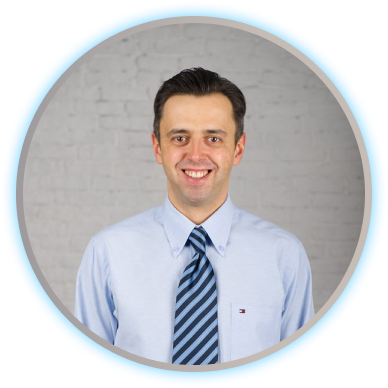

<section class="education">
    <div class="education__container">
        <div class="education__dentist">
            
            <p class="education__dentist-text">
                Обладаю всеми необходимыми современными знаниями и навыками для
                оказания квалифицированной стоматологической помощи на высшем
                мировом уровне.
            </p>
        </div>
        <div class="education__content">
            <h2 class="education__subtitle subtitle">Образование</h2>
            <ul class="education__list">
                <li>
                    Окончил Санкт-Петербургский Государственный Медицинский
                    Университет имени академика И.П. Павлова в 1999 году.
                    Проходил интернатуру на кафедре ортопедической стоматологии
                    СПБГМУ им. Павлова. 
                </li>
                <li>
                    Имею сертификат специалиста по ортопедической,
                    терапевтической и хирургической стоматологии.
                </li>
                <li>
                    Обучался у ведущих специалистов России, Европы и Америки.
                    Сотрудничаю с ведущими специалистами смежных специальностей
                    и зуботехническими лабораториями в стране и за рубежом.
                </li>
                <li>
                    Постоянно посещаю практические и теоретические семинары,
                    съезды, курсы и конференции.
                </li>
                <li>
                    Работал в ряде ведущих стоматологических клиник  города.
                </li>
            </ul>
        </div>
    </div>
</section>
